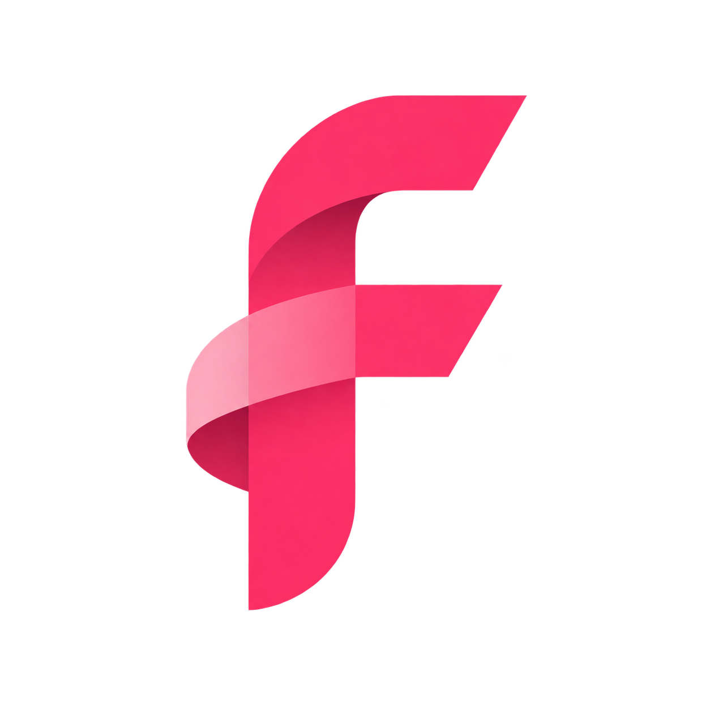

搜索源
让合适的来源，加入你的搜索。公开来源排在前面。已适配表示存在接入规则；是否可用仍以当前连接测试为准。
找到之后，也要看清状态。
下面是同一作品的四个虚构版本，用于演示证据层级。| 资源 / 版本 | 播放状态 | 大小 | 操作 |
|---|
综合推荐先看近期实际起播证据，再考虑相关度、做种等信息。检测期间保留当前阅读位置，有状态更新时提示重新排序。
“有数据”不代表已经能播放；本次超时不代表永远无法下载。播放证据会过期，未检测资源不会被标成成功。

AFMC FIND下一版设计公开来源排在前面。已适配表示存在接入规则；是否可用仍以当前连接测试为准。
| 资源 / 版本 | 播放状态 | 大小 | 操作 |
|---|
综合推荐先看近期实际起播证据，再考虑相关度、做种等信息。检测期间保留当前阅读位置，有状态更新时提示重新排序。
“有数据”不代表已经能播放；本次超时不代表永远无法下载。播放证据会过期，未检测资源不会被标成成功。